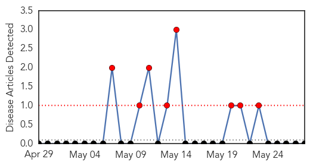
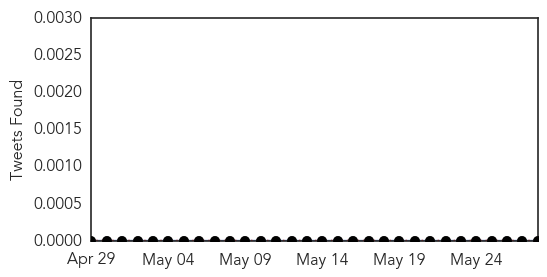
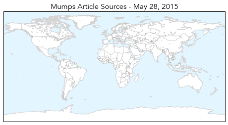
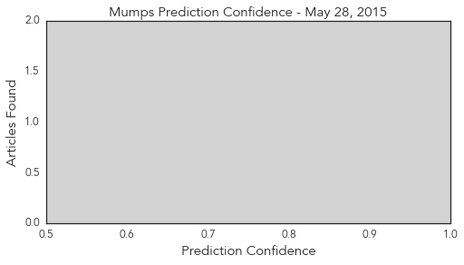
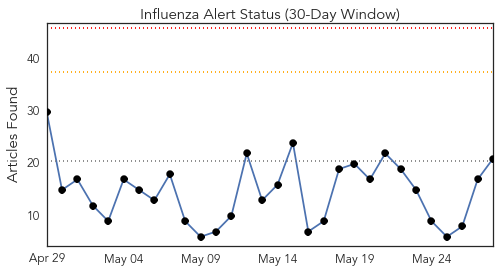
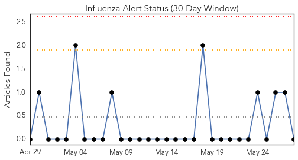
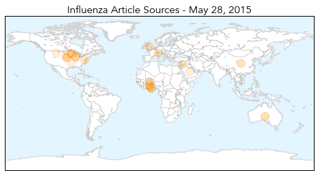

Mumps
30-Day Web Trend
8 alerts, 0 warnings

30-Day Twitter Trend
0 alerts, 0 warnings

Article Locations
Article Confidences
Top Articles:
-
No articles found for May 28, 2015
Top Tweets:
-
No tweets found for May 28, 2015
Influenza
30-Day Web Trend
0 alerts, 0 warnings

30-Day Twitter Trend
0 alerts, 0 warnings

Article Locations
Article Confidences

Top Articles:
- 0.966
- A Flu That's Infecting Thousands Of Dogs Could Move To Humans Next
- 0.956
- Elderly hit hard by influenza this year
- 0.928
- More new bird flu cases reported
- 0.885
- No bird flu in Ghana yet – Hannah Bissiw
- 0.876
- No bird flu in Ghana yet
- 0.865
- Five Sample Tests Result Positive Of Bird flu In Ghana -
- 0.860
- Research institute confirms bird flu in Ghana
- 0.781
- Waterfowl to stay home from fair in Missoula this summer
- 0.769
- Noguchi Memorial Institute confirms traces of Avian Flu in birds in Tema and Accra
- 0.753
- Bird flu: Poultry farmers meeting to strategize
- 0.751
- May 27, 2015 Archives
- 0.751
- May 27, 2015 Archives
- 0.751
- May 27, 2015 Archives
- 0.743
- Fourth Case of Avian Influenza Found in Nebraska
- 0.699
- 90 Percent of World Chemical Weapons Said Destroyed
- 0.589
- Yankton Press & Dakotan: Community
- 0.577
- Veterinarian Shortage Leaves U.S. Vulnerable to Animal Illness Outbreak
- 0.570
- 10 incidents discovered at the nation's biolabs
- 0.534
- South Dakota poultry exhibitions suspended
- 0.502
- الاخبار المصورة
- 0.500
- State officials advise fair boards to exclude waterfowl
Top Tweets:
-
No tweets found for May 28, 2015